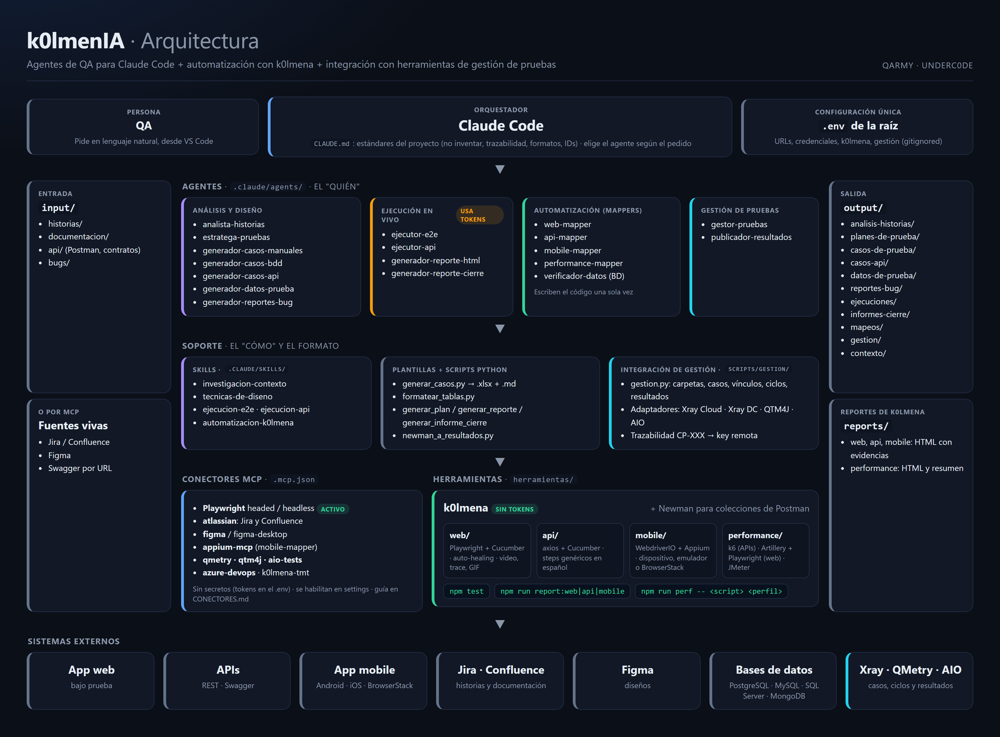
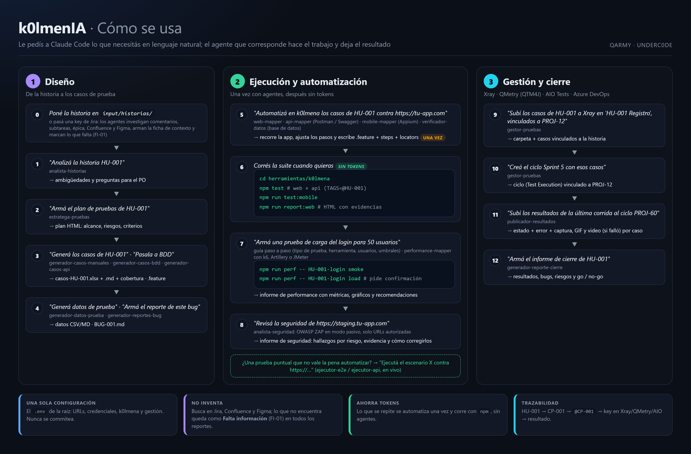

k0lmenIA
Contenido
- 1Qué es k0lmenIA
- 2Arquitectura
- 3Cómo se usa
- 4Agentes
- 5Requisitos
- 6Instalación
- 7Configuración: el archivo .env
- 8Investigación de contexto y falta información
- 9Guía por tarea: diseño y ejecución
- 10Automatización con k0lmena
- 11Pruebas de performance
- 12Gestión de pruebas: Xray, QMetry, AIO Tests y Azure DevOps
- 13Verificación en base de datos
- 14Seguridad web
- 15Conectores MCP
- 16Convenciones
- 17Estructura del repositorio
- 18Problemas frecuentes
- 19Extender el proyecto
k0lmenIA
Diseñá, ejecutá y automatizá pruebas conversando en español. Los agentes analizan historias, escriben casos, automatizan con k0lmena (web, API, mobile y performance) y llevan todo a Xray, QMetry, AIO Tests o Azure DevOps.
Qué es k0lmenIA
Un equipo de agentes especializados en QA para Claude Code, pensado para profesionales de testing manual: no hace falta programar, se trabaja conversando dentro de VS Code.
Ponés un insumo (una historia, una observación de bug, un contrato de API, o directamente una key de Jira o un link de Figma), pedís lo que necesitás en lenguaje natural y el agente que corresponde genera el resultado: análisis, planes, casos en Excel o Gherkin, datos, bugs, reportes HTML, automatización y carga en la herramienta de gestión.
1 · Diseño
Analizar historias, planificar, escribir casos manuales, BDD y de API, generar datos y redactar bugs.
output/2 · Automatización
Los agentes mapper escriben la automatización una sola vez; después corre con npm, sin tokens.
herramientas/k0lmena/3 · Gestión
Casos, ciclos y resultados con evidencias en Xray, QMetry o AIO Tests (casos también en Azure DevOps), y el informe de cierre.
output/Principios
| Principio | En la práctica |
|---|---|
| No inventar | Si falta un paso, un dato, una regla o un umbral, el agente lo marca y lo pregunta. Mejor un artefacto con huecos señalados que uno completo pero inventado. |
| Respetar los formatos | Los campos, su orden y sus valores los definen las plantillas y los scripts, no el agente. |
| Trazabilidad | Todo referencia la historia (HU-XXX); cada escenario automatizado lleva el ID del caso (@CP-001) y la key de la herramienta de gestión. |
| Cobertura pensada | Positivos, negativos, bordes y validaciones de campos, no solo el camino feliz. |
| Investigar antes de suponer | Antes de trabajar una historia se revisan sus comentarios, subtareas, épica, issues vinculados, Confluence y Figma. Lo que no aparece queda marcado como Falta información (FI-01). |
| Ahorro de tokens | Lo que se repite se automatiza una vez y después corre sin agentes. |
| Seguridad | Los secretos viven en el .env de la raíz, que nunca se versiona; los agentes nunca piden tokens por el chat. |
Arquitectura

| Pieza | Qué es | Dónde |
|---|---|---|
| Claude Code | Orquestador: interpreta el pedido, elige el agente y aplica los estándares del proyecto. | CLAUDE.md |
| Agentes | El "quién": un especialista por tarea. | .claude/agents/ |
| Skills | El "cómo": conocimiento que se carga cuando hace falta (técnicas de diseño, ejecución E2E y de API, convenciones de k0lmena). | .claude/skills/ |
| Plantillas y scripts | Formato de salida (planilla de casos, cobertura, bug) y reportes HTML determinísticos. | plantillas/ · scripts/ |
| Integración de gestión | gestion.py con un adaptador por herramienta: Xray Cloud, Xray Server/DC, QTM4J y AIO Tests. Azure DevOps va por su conector MCP. | scripts/gestion/ |
| Conectores MCP | Playwright y Atlassian (Jira y Confluence) activos; Azure DevOps, Figma, Appium, QMetry, AIO Tests y k0lmenaTMT listos para habilitar. Versiones fijas, sin secretos en el archivo. | .mcp.json |
| Herramientas | Newman para colecciones de Postman y k0lmena para web, API, mobile y performance. | herramientas/ |
| Entrada y salida | Insumos del usuario y artefactos generados, ordenados por tipo. | input/ · output/ |
Cómo se usa

- Poné tus insumosEn
input/, o pasá una key de Jira, una página de Confluence o un link de Figma con el conector activo. Los agentes investigan el contexto completo y marcan lo que falta (FI-01). - Pedí en lenguaje naturalClaude Code elige el agente. También podés nombrarlo: "usá el web-mapper para…".
- Revisá el resultadoEn
output/o enherramientas/k0lmena/. - Automatizá lo que se repiteY corrélo con
npm testtodas las veces que quieras, sin tokens.
| # | Le pedís | Obtenés |
|---|---|---|
| 0 | "Investigá el contexto de PROJ-12" | Ficha de contexto + Falta información |
| 1 | "Analizá la historia HU-001" | Ambigüedades y preguntas para el PO |
| 2 | "Armá el plan de pruebas de HU-001" | Plan HTML |
| 3 | "Generá los casos de HU-001" | casos-HU-001.xlsx + cobertura |
| 4 | "Subí los casos a Xray en 'HU-001 Registro', vinculados a PROJ-12, y creá el ciclo Sprint 5" | Casos y ciclo en Xray |
| 5 | "Automatizá en k0lmena los casos de HU-001 contra https://tu-app.com" | .feature + steps + locators |
| 6 | npm test · npm run report:web | Reporte HTML con evidencias |
| 7 | "Subí los resultados al ciclo del Sprint 5" | Estados y evidencias en Xray |
| 8 | "Armá una prueba de carga del login para 20 usuarios" | Script k6/Artillery/JMeter + reporte HTML |
| 9 | "Armá el informe de cierre de HU-001" | Go / no-go |
Agentes
Claude Code elige el agente según lo que pidas. Están en .claude/agents/ y se agrupan en cuatro familias. El catálogo completo (cuándo usar cada uno, pedido de ejemplo, entradas, salidas y qué confirma) está en AGENTES.md.
Análisis y diseño
analista-historias
Investiga el contexto de la historia y detecta ambigüedades, vacíos, riesgos y Falta información.
Usa formatear_tablas.py
Conectores atlassian, azure-devops, figma
output/analisis-historias/estratega-pruebas
Plan de pruebas: alcance, riesgos, tipos de prueba, entorno y criterios, en HTML.
Usa generar_plan.py
Conectores atlassian, azure-devops, figma
output/planes-de-prueba/generador-casos-manuales
Casos en Excel y Markdown + informe de cobertura con preguntas para el PO.
Usa generar_casos.py
Conectores atlassian, azure-devops, figma
output/casos-de-prueba/manuales/generador-casos-bdd
Escenarios Gherkin (keywords en inglés, contenido en español) + cobertura.
Usa formatear_tablas.py
Conectores atlassian, azure-devops, figma
output/casos-de-prueba/bdd/generador-casos-api
Casos de API positivos, negativos, de schema y de autorización.
Usa formatear_tablas.py
Conectores atlassian, azure-devops
output/casos-api/generador-datos-prueba
Datos válidos, inválidos y de borde en Markdown o CSV.
Usa formatear_tablas.py
Conectores atlassian, azure-devops
output/datos-de-prueba/generador-reportes-bug
Reporte de bug profesional según la plantilla, con severidad y prioridad justificadas.
Conectores atlassian, azure-devops
output/reportes-bug/Ejecución en vivo
usa tokens en cada corridaejecutor-e2e
Ejecuta casos en un navegador real con Playwright MCP (headed o headless), con evidencia.
Usa generar_reporte.py
Conectores playwright, playwright-headless
output/ejecuciones/ejecutor-api
Corre una colección de Postman con Newman.
Usa Newman, correr_newman.py
output/ejecuciones/generador-reporte-html
Dashboard HTML de los resultados de una ejecución.
output/ejecuciones/generador-reporte-cierre
Informe de cierre de la ronda con recomendación go/no-go.
output/informes-cierre/Automatización con k0lmena
después corre sin tokensweb-mapper
Recorre la web siguiendo tus casos y genera .feature, steps y locators.
Usa k0lmena (Playwright + Cucumber)
Conectores playwright, playwright-headless
k0lmena/web/api-mapper
Lee Postman o Swagger/OpenAPI, verifica los endpoints y genera los .feature.
Usa k0lmena (axios + Cucumber)
k0lmena/api/mobile-mapper
Recorre la app con Appium y genera .feature, steps y locators.
Usa k0lmena (WebdriverIO + Appium)
Conectores appium-mcp
k0lmena/mobile/performance-mapper
Carga, estrés, soak y picos con k6, Artillery o JMeter; pregunta carga y umbrales.
Usa k6, Artillery, JMeter, generar_informe_performance.py
k0lmena/performance/verificador-datos
Verifica datos en PostgreSQL, MySQL, SQL Server o MongoDB y suma verificaciones de BD a los tests.
Usa npm run bd
.featureanalista-seguridad
Escaneo de seguridad web pasivo con OWASP ZAP e informe con hallazgos, evidencia y cómo corregirlos.
output/seguridad/Gestión de pruebas
gestor-pruebas
Carpetas, casos, vínculos con la historia y ciclos en Xray, QMetry (QTM4J), AIO Tests o Azure DevOps Test Plans.
Conectores azure-devops (Azure Test Plans)
output/gestion/publicador-resultados
Sube los resultados de npm test al ciclo: estado, error y evidencias.
Skills: el cómo que usan los agentes
| Skill | Qué enseña | Lo usan |
|---|---|---|
investigacion-contexto | Investigar la historia completa (comentarios, subtareas, épica, Confluence, Figma, contratos) y registrar la Falta información (FI-XX) | analista-historias, estratega-pruebas, generadores de casos y datos, web-mapper, api-mapper, mobile-mapper |
tecnicas-de-diseno | Equivalencia, valores límite, tabla de decisión, transición de estados y pairwise | generadores de casos manuales, BDD y API; api-mapper |
ejecucion-e2e | Ejecutar en el navegador con Playwright MCP: modos, snapshots, esperas y evidencia | ejecutor-e2e, web-mapper |
ejecucion-api | Correr colecciones con Newman: base_url, token, validaciones y resultados | ejecutor-api |
automatizacion-k0lmena | Convenciones de k0lmena: features, steps, locators, tags, steps de BD y scripts de performance | los mappers y verificador-datos |
guia-performance | Planificar con la persona una prueba de performance paso a paso | la conversación principal y performance-mapper |
Requisitos
Instalá solo lo que vayas a usar.
| Para… | Necesitás |
|---|---|
| Usar los agentes | Claude Code y una cuenta de Claude (Pro, Max, Team o Enterprise) o acceso por API de Anthropic. VS Code recomendado. |
| Casos, reportes y gestión | Python 3 con openpyxl, tabulate y requests. |
| Ejecutar E2E en vivo | Node.js 18+ y los navegadores de Playwright. |
| Ejecutar colecciones de Postman | Newman. |
| Automatizar con k0lmena | Node.js 20+. |
| Automatizar mobile | Node.js 22+, JDK y Android SDK, o macOS con Xcode para iOS; o una cuenta de BrowserStack. |
Instalación
En cinco minutos tenés los agentes andando; k0lmena y el resto se suman cuando los necesites.
- Instalá Claude Code
En Windows, seguí la guía oficial.
curl -fsSL https://claude.ai/install.sh | bash # macOS / Linux npm install -g @anthropic-ai/claude-code # alternativa (con Node.js 22 LTS cubrís todo) claude --version
- Cloná el repositorio
En Windows el comando es
git clone https://github.com/underc0delabs/k0lmenIA.git cd k0lmenIA # o la carpeta donde lo clonaste pip install -r requirements.txt # Mac/Linux: pip3 npm install # k0lmena cp .env.example .env # y completalo (PowerShell: copy)
python; en Mac y Linux,python3ypip3(sipip3responde externally-managed-environment, usá un entorno virtual:python3 -m venv .venv). - Revisá que esté todo listo
npm run doctor # dice qué falta y cómo resolverlo - Abrí VS Code y lanzá Claude Code
code . claude # la primera vez pide autenticarte - Sumá lo opcional
npx playwright install # ejecución E2E en vivo npm install -g newman # colecciones de Postman cd herramientas/k0lmena npx playwright install chromium npm run bootstrap:k6 # performance de APIs con k6 npm run bootstrap:jmeter # performance con JMeter (Java 8+)
Configuración: el archivo .env
Hay un solo .env, en la raíz del repo. Lo usan los agentes, k0lmena y los scripts de gestión. Está en .gitignore y la plantilla comentada es .env.example.
| Grupo | Variables | Para qué |
|---|---|---|
| App bajo prueba | APP_URL APP_USER APP_PASSWORD | Ejecución E2E y logins |
| API | API_TOKEN API_BASEURL | Newman, suite de API y k6 |
| Web | BASEURL BROWSER HEADLESS VIEWPORT_WIDTH VIEWPORT_HEIGHT LOCALE TIMEZONE | Navegador de la suite web |
| Ejecución | TAGS PARALLEL | Qué escenarios y cómo se corren |
| Evidencias | EVIDENCE (captura · ambos · off) VIDEO TRACE | Qué se adjunta al reporte |
| Auto-healing | K0LMENA_AUTO_HEALING | Recuperar locators rotos |
| Mobile | MOBILE_TARGET MOBILE_PLATFORM MOBILE_DEVICE_NAME MOBILE_APP MOBILE_UDID BROWSERSTACK_* | Dónde corre la suite mobile |
| Performance | PERF_VUS PERF_DURACION | Pisar la carga de los scripts k6 |
| Bases de datos | DB_CONEXIONES + DB_<NOMBRE>_MOTOR _HOST _PUERTO _BASE _USUARIO _CLAVE (o _URL) _ESCRITURA _PRODUCCION | Verificación en base de datos |
| Gestión | GESTION_HERRAMIENTA GESTION_PROYECTO + credenciales de la herramienta | Xray, QMetry y AIO Tests |
| Azure DevOps (MCP) | ADO_ORGANIZACION ADO_PAT ADO_PROYECTO | Boards, Wiki y Test Plans |
Usá credenciales de un entorno de prueba, nunca de producción. Los agentes leen los secretos del .env: nunca pegues un token en el chat ni lo escribas en un archivo versionado.
Carpetas de entrada
| Carpeta | Qué va |
|---|---|
input/historias/ | Historias de usuario con sus criterios de aceptación (HU-001.md, …). |
input/documentacion/ | Documentación del producto que sirva de contexto. |
input/api/ | Contratos, colecciones de Postman y environments. |
input/bugs/ | Observaciones sueltas de errores para convertir en reportes. |
Investigación de contexto y "Falta información"
Antes de analizar, planificar, escribir casos o automatizar, los agentes investigan el contexto completo de la historia en lugar de suponer. Lo que no encuentran en ninguna fuente queda marcado como Falta información en todos los reportes.
Dónde buscan
| Fuente | Qué revisan |
|---|---|
| Historia de Jira | Descripción, criterios, estado, labels, componentes y adjuntos. |
| Comentarios | Todos. Las decisiones que se tomaron después ("acordamos que el límite es 50") reemplazan a la descripción, citando quién y cuándo. |
| Subtareas, épica e issues vinculados | Detalle de cada subtarea, reglas generales e historias hermanas de la épica, dependencias y bugs conocidos del flujo. |
| Confluence | Páginas enlazadas o, si no hay, las más relevantes del espacio del proyecto. |
| Figma | Textos exactos, mensajes de error, estados y campos obligatorios. |
Contratos e input/ | Swagger, Postman y documentación local. |
El resultado es una ficha de contexto reutilizable, output/contexto/contexto-HU-XXX.md: fuentes consultadas, hallazgos por criterio, decisiones, contradicciones y lo que falta. Si la historia no cambió, los demás agentes la reusan sin volver a investigar. Si un conector no está activo, la fuente queda como "No disponible" en lugar de suponerla.
Falta información (FI-XX)
Cada dato que no aparece en ninguna fuente (o aparece contradictorio) recibe un ID por historia, con qué falta, dónde se buscó, a qué afecta y la pregunta para el PO. El mismo ID viaja a todos los artefactos. La app no es fuente de requisitos: si el resultado esperado depende de un dato faltante, el escenario no se "acomoda" a lo que hace la aplicación; se automatiza con el supuesto marcado o queda @bloqueado hasta que el PO responda.
| Dónde | Cómo se ve |
|---|---|
| Planilla de casos | Casos resaltados en ámbar, etiqueta @falta-info, detalle en Comentarios y hoja Falta información. |
| Análisis y coberturas | Sección Falta información; criterios con cobertura Parcial (falta información). |
.feature de k0lmena | Tags @falta-info @FI-01 y comentario # FALTA INFORMACIÓN (FI-01): …. |
| Reporte de mapeo | Estado Falta información. El mapper no usa la app para completar el dato: lo que muestra la app queda como observación. |
| Reportes de k0lmena y de ejecución | Nota visible en el escenario y aviso en el resumen. |
| Informe de cierre | Sección Falta información; los ítems abiertos cuentan como riesgo para el go/no-go. |
| Xray · QMetry · AIO | El comentario del resultado aclara que el caso depende de información faltante. |
Diseño y ejecución
Qué pedir, qué hace cada agente y qué deja.
Analizar una historia analista-historias
Revisa cada criterio y entrega analisis-HU-001.md con ambigüedades, vacíos, riesgos, casos no contemplados y preguntas para el PO.
Armar el plan de pruebas estratega-pruebas
Dashboard HTML con alcance, objetivos, tipos de prueba, riesgos, datos y entorno, y criterios de entrada y salida.
Generar casos manuales generador-casos-manuales
Entrega casos-HU-001.xlsx, casos-HU-001.md y casos-HU-001-cobertura.md. Cubre camino feliz, negativos, bordes y validaciones. Esa planilla es la que después se sube a la herramienta de gestión o se automatiza.
Generar escenarios BDD generador-casos-bdd
Genera HU-001-<slug>.feature, con un tag @CP-XXX por escenario, y HU-001-cobertura.md.
Generar casos de API generador-casos-api
Tabla resumen y detalle por caso: método, endpoint, headers, body, status y schema esperado.
Datos de prueba y bugs generador-datos-prueba generador-reportes-bug
Datos válidos, inválidos y de borde. Los bugs siguen plantillas/plantilla-reporte-bug.md (editala para usar tu formato) y marcan lo que falta en vez de inventarlo.
Ejecutar en vivo ejecutor-e2e ejecutor-api usa tokens
El ejecutor E2E pregunta si querés ver el navegador, ejecuta con Playwright MCP, saca evidencia y genera reporte-HU-001-<fecha-hora>.html. El de API corre la colección con Newman. Ideal para pruebas puntuales: lo que se repite conviene automatizarlo.
Reportes e informe de cierre generador-reporte-html generador-reporte-cierre
Dashboards con indicadores, gráficos y detalle; el informe de cierre suma bugs abiertos, riesgos y la recomendación go/no-go.
Automatización con k0lmena
El framework integrado en herramientas/k0lmena/. Un agente mapper recorre la aplicación una sola vez y escribe la automatización; desde ahí la suite corre con npm, sin agentes y sin tokens.
Web
Playwright + Cucumber, video, trace y GIF. Con K0LMENA_AUTO_HEALING=on recupera locators rotos.
API
axios + Cucumber con steps genéricos en español: no hace falta programar.
Mobile
WebdriverIO + Appium en dispositivo, emulador o BrowserStack.
Performance
k6 para APIs, Artillery + Playwright para flujos web y JMeter para quien ya trabaja con .jmx.
Las carpetas de k0lmena vienen vacías: todo lo que hay adentro lo generan los mappers para tu aplicación.
web-mapper
- Lee los casos (manuales o BDD).
- Navega la web real con Playwright MCP y comprueba que cada paso se puede ejecutar.
- Genera
web/features/HU-001-<slug>.feature,web/steps/HU-001.steps.tsyweb/locators/HU-001.locators.ts, reutilizando steps existentes. - Valida con
npm run test:weby dejaoutput/mapeos/mapeo-HU-001-web.md.
Si un paso no se puede ejecutar, el escenario queda @bloqueado con el motivo y no corre hasta que se resuelva.
api-mapper
Lee Postman (v2.x) o Swagger/OpenAPI, te deja elegir los endpoints, diseña escenarios positivos, negativos y de autorización, los verifica contra la API real y escribe los .feature con los steps genéricos. Antes de un POST, PUT, PATCH o DELETE pide autorización.
mobile-mapper
Necesita el conector Appium MCP y la app en mobile/apps/ (no se versiona). Después la suite corre sin MCP según MOBILE_TARGET:
| Destino | Qué necesitás |
|---|---|
device | Dispositivo por USB con depuración y MOBILE_UDID (de adb devices). |
emulator | Emulador o simulador encendido y MOBILE_DEVICE_NAME. |
browserstack | BROWSERSTACK_USER, BROWSERSTACK_KEY y BROWSERSTACK_APP. |
Correr la suite
cd herramientas/k0lmena npm test # web + API npm run test:web # también: test:api · test:mobile · test:all TAGS=@HU-001 npm test # filtrar por tag (bash) $env:TAGS="@HU-001"; npm test # filtrar por tag (PowerShell) npm run report:web # también: report:api · report:mobile
Si EVIDENCE está vacía, npm test pregunta al arrancar qué guardar de los tests que pasan: solo captura, o captura + GIF del recorrido.
Evidencias en el reporte
| Suite | Escenario que pasa | Escenario que falla |
|---|---|---|
| Web | Captura final (+ GIF opcional) | Video completo, captura, error con stack, URL y título, logs del navegador (consola, errores JS, requests fallidos, HTTP ≥ 400), logs de Node y trace de Playwright |
| API | Request y response (el Authorization se oculta) | Lo mismo, más la validación que falló |
| Mobile | Captura final (+ GIF opcional) | Video completo, captura, page source y logs del dispositivo |
Herramientas extra
| Comando | Para qué |
|---|---|
npm run crawler [url] | Genera un archivo de locators recorriendo una página. |
npm run link-tester | Busca enlaces e imágenes rotas en BASEURL. |
npm run record | Graba un flujo con Playwright codegen. |
npm run debug | Corre la suite web en modo debug. |
Pruebas de performance
El performance-mapper arma pruebas de carga, estrés, soak y picos. Nunca usa valores por defecto: la carga y los umbrales los definís vos.
Una prueba de carga genera tráfico real. Corrédla solo contra ambientes de prueba o con autorización de los dueños del sistema.
performance-mapper
- Te guía paso a paso, una pregunta por vez y con una sugerencia justificada en cada una: objetivo y tipo de prueba, herramienta, ambiente (y que no sea producción) y endpoints, usuarios concurrentes, rampa, duración y tiempo de pensamiento (te ayuda a calcularlos desde el volumen de negocio), umbrales y perfiles a correr.
- Deja el plan en
output/performance/<HU>/y te pide confirmación. - Te recomienda la herramienta (la decisión es tuya): k6 para APIs (escala a miles de usuarios) Artillery + Playwright para flujos de navegador (pocos usuarios: cada uno es un Chromium) o JMeter si tu equipo ya lo usa, traés un
.jmxo necesitás otros protocolos. - Escribe el script una vez y lo valida con un smoke.
- Corre con carga solo con tu confirmación explícita para cada corrida.
- Arma el informe de performance: dashboard con veredicto, capacidad observada, métricas y gráficos por corrida, umbrales, p95 por endpoint, hallazgos y recomendaciones.
Comandos
npm run perf # lista los scripts npm run perf -- <script> smoke # valida el script con carga mínima npm run perf -- <script> load # carga objetivo (pide confirmación) npm run perf -- <script> stress --confirmar # sin pregunta: CI o con autorización npm run perf -- <script> load --vus 20 --duracion 2m # k6 y JMeter: pisa la carga
| Perfil | Qué hace |
|---|---|
smoke | Carga mínima para validar que el script funciona. |
load | Sube hasta la carga objetivo, la sostiene y baja. |
stress | 1x, 2x y 3x la carga objetivo: busca el punto de quiebre. |
soak | Carga objetivo durante mucho tiempo: fugas de memoria y degradación. |
spike | Salto brusco a un pico y vuelta: cómo se recupera. |
Cada corrida deja en reports/performance/<k6|artillery|jmeter>/ un reporte HTML con el veredicto, requests, req/s, errores, latencias p50/p95/p99, umbrales con el valor medido, detalle por endpoint o paso, códigos de respuesta, checks y, en Artillery, la evolución en el tiempo. Si un umbral no se cumple, el comando termina con error.
Xray, QMetry, AIO Tests y Azure DevOps
gestor-pruebas y publicador-resultados trabajan con Xray Cloud, Xray Server/Data Center, QMetry para Jira (QTM4J) y AIO Tests, con los mismos comandos para todas.
Se configura en el .env: GESTION_HERRAMIENTA (xray-cloud, xray-dc, qtm4j o aio), GESTION_PROYECTO (la key del proyecto de Jira) y las credenciales de tu herramienta, explicadas en .env.example.
gestor-pruebas
Crea la carpeta, sube los casos (manuales desde el .xlsx o BDD desde el .feature), los vincula a la historia, crea ciclos y les agrega casos. La primera vez hace una prueba en seco (--dry-run). Guarda la trazabilidad en output/gestion/HU-001-<herramienta>.json: un caso nunca se sube dos veces.
publicador-resultados
Asocia cada escenario a su caso por el tag @CP-XXX y carga el estado, un comentario con el error y las evidencias: captura siempre, GIF si se generó y video solo si falló. Nunca asigna un resultado por aproximación.
Equivalencias
| Concepto | Xray | QTM4J | AIO Tests |
|---|---|---|---|
| Caso | Issue Test (Manual o Cucumber) | Test case | Caso (Classic o BDD) |
| Ciclo | Test Execution | Test cycle | Test cycle |
| Caso ↔ historia | Link "Test" (cobertura) | Requirement link | jiraRequirementIDs |
| Ciclo ↔ historia | Link "Relates" | Requirement link | jiraTaskIDs |
Comandos manuales
python scripts/gestion/gestion.py --dry-run carpeta --ruta "HU-001 Registro" python scripts/gestion/gestion.py subir-casos --origen <casos.xlsx> --carpeta "HU-001 Registro" --historia PROJ-12 --traza HU-001 python scripts/gestion/gestion.py crear-ciclo --nombre "Sprint 5" --historia PROJ-12 --traza HU-001 python scripts/gestion/gestion.py extraer-resultados --reporte <cucumber-report.json> python scripts/gestion/gestion.py publicar-resultados --ciclo PROJ-60 --resultados <resultados.json> --traza HU-001
Las carpetas van sin barra inicial (en Git Bash, /HU-001 se convierte en una ruta de Windows). Referencia completa en scripts/gestion/README.md.
Azure DevOps (Test Plans)
Azure DevOps no pasa por gestion.py: se integra por su conector MCP oficial (azure-devops), con ADO_ORGANIZACION, ADO_PAT y ADO_PROYECTO en el .env. Los agentes leen las historias (con comentarios, tareas, padre y vínculos) y la Wiki, y gestor-pruebas crea los Test Cases con sus pasos (los arma scripts/gestion/para_azure_devops.py), los vincula a la historia y los agrega a una suite. Todavía no se publican resultados de ejecución en Azure DevOps.
Verificación en base de datos
El verificador-datos revisa lo que las pruebas no ven: qué quedó guardado, en qué estado y con qué valores. Soporta PostgreSQL, MySQL / MariaDB, SQL Server y MongoDB, con varias conexiones con nombre.
A pedido
"Verificá si existe el usuario ana@test.com y en qué estado quedó." Mira el esquema, arma la consulta con parámetros y te responde.
Dentro de los tests, si lo pedís
Suma steps de base de datos a los .feature de web, API o mobile solo cuando se lo pedís; después corren con npm test, sin tokens.
Seguro por defecto
Solo lectura, en transacciones que se descartan; datos sensibles enmascarados. Escribir requiere habilitarlo y confirmar cada operación.
Configuración
DB_CONEXIONES=principal,pagos # la primera es la de por defecto DB_PRINCIPAL_MOTOR=postgres # postgres | mysql | mariadb | sqlserver | mongodb DB_PRINCIPAL_HOST=localhost DB_PRINCIPAL_PUERTO=5432 DB_PRINCIPAL_BASE=tienda DB_PRINCIPAL_USUARIO=qa_lectura DB_PRINCIPAL_CLAVE=... DB_PRINCIPAL_ESCRITURA=no # si = permite escribir con confirmación DB_PRINCIPAL_PRODUCCION=no # si = nunca escribe
Steps para los tests
Solo cuando lo pedís. Los mappers (web, API y mobile) no agregan verificaciones de base de datos por su cuenta: si un caso menciona datos guardados, lo dejan como sugerencia en el reporte de mapeo. El verificador-datos, ante una consulta puntual, responde sin tocar los .feature.
When envío un POST a "/usuarios" con el body: ...
And guardo el campo "id" de la respuesta como "idUsuario"
Then existe en la base de datos un registro en "usuarios" donde "id" es "{idUsuario}"
And el registro de "usuarios" donde "id" es "{idUsuario}" tiene:
| campo | valor |
| estado | ACTIVO |
| baja | (nulo) |
And la base de datos "pagos" tiene 1 registro en "movimientos" donde:
| campo | valor |
| usuario_id | {idUsuario} |También: no existe en la base de datos …, consulto en la base de datos: (SQL, o JSON en MongoDB), la consulta devuelve N filas, el campo "x" de la consulta es "y" y guardo el campo "x" de la consulta como "var". Si el dato se guarda de forma asíncrona, los steps reintentan hasta DB_ESPERA_MS. Cada verificación deja en el reporte la consulta y las filas encontradas.
Sin agente
cd herramientas/k0lmena npm run bd -- conexiones # lista y prueba las conexiones npm run bd -- esquema --tabla usuarios # columnas de una tabla npm run bd -- existe --tabla usuarios --donde email=ana@test.com npm run bd -- consultar --sql "SELECT id, estado FROM usuarios WHERE email = ?" --param ana@test.com
Para preparar o limpiar datos, la conexión necesita DB_<NOMBRE>_ESCRITURA=si y el agente muestra la sentencia y pide confirmación antes de cada operación. Con DB_<NOMBRE>_PRODUCCION=si nunca escribe. Recomendado: un usuario de base de datos con permisos de solo lectura.
Seguridad web
El analista-seguridad revisa la seguridad de tu aplicación con OWASP ZAP (libre y gratuito) en modo pasivo: recorre el sitio y analiza las respuestas sin enviar ataques ni modificar datos.
Solo se escanean sitios propios o con autorización por escrito, declarados en SEGURIDAD_URLS_AUTORIZADAS del .env. Un escaneo pasivo no reemplaza una prueba de penetración.
analista-seguridad
- Confirma la URL (tiene que estar autorizada) y la duración del recorrido.
- Escanea con ZAP baseline en Docker (abrí Docker Desktop antes).
- Analiza los hallazgos: los prioriza, descarta falsos positivos con su motivo y los explica en español.
- Arma el informe HTML: hallazgos por riesgo, dónde aparece cada uno, evidencia, cómo se corrige y recomendaciones.
python herramientas/zap/escanear.py --url https://staging.mi-app.com --historia HU-001
Salida en output/seguridad/<HU o host>/<fecha>/. Detalle en herramientas/zap/README.md.
Conectores MCP
Conectan a Claude Code con sistemas externos. Claude Code arranca directo: vienen activos Playwright y Atlassian, y cada QA activa el resto con npm run conector. Sin secretos: las credenciales se leen del .env. Vienen activos Playwright y Atlassian (Jira y Confluence); el .env.example trae un bloque comentado por herramienta para completar solo los de tu equipo.
| Conector | Para qué | Autenticación |
|---|---|---|
playwright | Navegador para el ejecutor E2E y el web-mapper (headed y headless). | Activo |
atlassian | Jira y Confluence: historias, criterios y documentación funcional directamente. | Activo · OAuth o API token |
figma | Diseños desde un link a un frame o archivo: textos, estados y componentes. Requiere asiento Full o Dev. | Cuenta (OAuth) |
appium-mcp | Lo usa el mobile-mapper para recorrer la app. | ANDROID_HOME |
qmetry · qtm4j | Consultar QMetry desde el chat. | API key |
aio-tests | Consultar AIO Tests desde el chat. | Token |
azure-devops | Azure DevOps: historias, Wiki y casos en Test Plans. | PAT |
k0lmena-tmt | Cargar y consultar casos en k0lmenaTMT. | Token personal |
- Completá el .envSi usa token, cargalo en el
.envde la raíz. Atlassian y Figma se autorizan con tu cuenta desde/mcp. - Activalo
npm run conector -- activar azure-devops(queda solo para vos;npm run conectorlista los disponibles). - VerificáReiniciá Claude Code y revisá la conexión con
/mcp.
Para Xray no hace falta MCP: se usa scripts/gestion/. Guía completa en CONECTORES.md.
Convenciones
| Elemento | Formato |
|---|---|
| Historias | HU-001 |
| Criterios de aceptación | CA1 · CA2 |
| Casos manuales | CP-001 |
| Casos de API | CP-API-001 |
| Bugs | BUG-001 |
| Falta información | FI-01 · @falta-info @FI-01 |
| Escala | Valores |
|---|---|
| Severidad y prioridad | Crítica · Alta · Media · Baja |
| Estado de un caso | N/A · Pendiente · En ejecución · Aprobado · Fallido · Bloqueado |
Tags en k0lmena
| Dónde | Tags |
|---|---|
| Feature | La historia y el tipo: @HU-001 @web · @api · @mobile |
| Scenario | El ID del caso (@CP-001, @CP-API-001) y @smoke si es crítico |
| Excluir | @bloqueado: un paso no se pudo verificar y el escenario no se ejecuta |
Nombres de archivos
| Artefacto | Nombre |
|---|---|
| Análisis | analisis-HU-001.md |
| Casos manuales | casos-HU-001.xlsx + .md + -cobertura.md |
| Casos BDD | HU-001-registro.feature + HU-001-cobertura.md |
| Bug | BUG-001.md |
| Automatización | <tipo>/features/HU-001-<slug>.feature · steps/HU-001.steps.ts · locators/HU-001.locators.ts |
| Performance | performance/k6/http/HU-001-<slug>.ts · performance/artillery/HU-001-<slug>.yaml · performance/jmeter/HU-001-<slug>.jmx |
| Mapeo | output/mapeos/mapeo-HU-001-<tipo>.md |
Estructura del repositorio
k0lmenIA/ ├── CLAUDE.md Contexto y estándares (Claude Code lo lee siempre) ├── ARQUITECTURA.md Cómo crece el repo ├── CONECTORES.md Cómo activar los conectores MCP ├── CHANGELOG.md Cambios de cada versión ├── LICENSE Licencia MIT ├── .env.example Plantilla de variables (copiar a .env) ├── .mcp.json Conectores MCP (sin secretos; activos según settings) ├── package.json Atajos para correr k0lmena desde la raíz (npm test…) ├── docs/ Este sitio, el PDF y los diagramas ├── tests/ Tests de los scripts (pytest y node --test) ├── .github/workflows/ CI: los tests en Ubuntu y Windows ├── .claude/ │ ├── agents/ Los 19 agentes │ ├── skills/ Contexto, diseño, guía de performance, ejecución, k0lmena │ └── settings.json Conectores habilitados y permisos ├── input/ historias/ documentacion/ api/ bugs/ ├── output/ Lo que generan los agentes ├── plantillas/ Bug, planilla de casos, cobertura ├── scripts/ Casos, reportes, informes, Newman, recolector y doctor │ ├── gestion/ Xray, QMetry (QTM4J), AIO Tests y casos para Azure DevOps │ └── mcp/ Lanzadores de los conectores MCP (leen el .env) └── herramientas/ ├── newman/ Colecciones de Postman ├── zap/ OWASP ZAP: seguridad web (pasivo) └── k0lmena/ ├── web/ features/ steps/ locators/ + framework ├── api/ features/ steps/ (steps genéricos) ├── mobile/ features/ steps/ locators/ support/ apps/ ├── performance/ k6/http/, artillery/ y jmeter/ ├── reports/ Reportes HTML ├── run-tests.js Runner de npm test └── run-perf.js Runner de npm run perf
Problemas frecuentes
¿Qué pasa si a la historia le falta información?
FI-01) con la pregunta para el PO, y se marca en los casos, los .feature y todos los reportes. Nunca se completa con lo que hace la app.No sé qué me falta instalar o configurar
npm run doctor: revisa Python, Node, k0lmena, Playwright, Newman, Java, Docker, el .env y las variables de cada conector habilitado, y dice cómo resolver lo que falta.Un agente devuelve "Necesito que confirmes"
Un agente nuevo no aparece
La suite web falla con un viewport de 0x0 o sin URL
.env de la raíz o sus variables de k0lmena: cp .env.example .env y completalo.npm test corre 0 escenarios
TAGS no coincide con ningún escenario.Un escenario nunca se ejecuta
@bloqueado: el mapper no pudo verificar un paso. El motivo está en un comentario arriba del escenario."No encuentro k6"
npm run bootstrap:k6 en herramientas/k0lmena/ o instalá k6 en el PATH."No encuentro JMeter" o "JMeter necesita Java"
npm run bootstrap:jmeter (o definí JMETER_HOME) e instalá Java 8 o superior en el PATH (o definí JAVA_HOME).npm run perf no corre un perfil con carga desde el agente
--confirmar, que el agente agrega solo después de tu confirmación.Una carpeta de Xray/QMetry/AIO aparece como C:/Program Files/Git/…
/ inicial: "HU-001 Registro".Un conector MCP no conecta
claude (no en el .env). Atlassian y Figma se autorizan desde /mcp.¿Los tests verifican la base de datos siempre?
.feature solo cuando las pedís, y sin DB_CONEXIONES en el .env la suite corre igual que siempre.Falta una librería de Python
pip install -r requirements.txtExtender el proyecto
Agregar un agente
- Creá el archivo
.claude/agents/mi-agente.mdcon frontmatternameydescription. La descripción es lo que usa Claude Code para decidir cuándo invocarlo. - Escribí el cuerpoEn español: rol, entradas, proceso, salida y reglas.
- Definí el formatoSi genera un formato propio, sumá su plantilla en
plantillas/o su script enscripts/, y su carpeta enoutput/. - Normalizá las tablasSi genera tablas en un
.md, pasalas porscripts/formatear_tablas.py. - Si necesita una respuesta de la personaCopiá la sección "Cuando te falta un dato o una confirmación" de cualquier agente: los subagentes no pueden preguntar a mitad del trabajo, así que devuelven "Necesito que confirmes".
Skills, conectores y herramientas
Skill
Una carpeta en .claude/skills/ con su SKILL.md; se carga solo cuando hace falta.
Conector MCP
Una entrada en .mcp.json, sin secretos; los tokens se leen del .env con un script de scripts/mcp/.
Herramienta
Una subcarpeta en herramientas/ con su README.
Tests del repo
python -m pytest tests y npm run test:repo; corren en CI (Ubuntu y Windows) en cada cambio. Sumá un test cuando cambies un script.
Regenerar esta documentación
node docs/generar.js # diagramas (PNG) y PDF, con el Playwright de k0lmenaEl sitio es docs/index.html (publicado con GitHub Pages en underc0delabs.github.io/k0lmenIA); el PDF sale del mismo HTML con estilos de impresión, y los diagramas de docs/diagramas/.
Licencia
Licencia MIT — © 2026 QARMY. k0lmena es un proyecto open source de Danilo Vezzoni. Hecho por la comunidad de Underc0de.